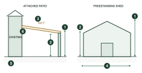

Elevations are where height, clearance and pitch get checked, and where a missing figure stops an assessment. The two below are typical — an attached patio and a freestanding shed — with the dimensions we look for marked on them.

- 1Overall height, measured from natural ground level
- 2Clearance to the underside of the beam, or wall height
- 3Roof pitch or fall, stated as a figure
- 4Overall width and post or column spacing, dimensioned
- 5Natural ground line, and finished floor or slab level
- 6How the structure attaches to the existing dwelling
What We Need to See
- Every elevation that shows the works — usually all four for a freestanding structure
- Overall height measured from natural ground level, not the slab
- Wall height, or clearance to the underside of the beam
- Roof pitch or fall stated as a figure, not just drawn
- Post and column positions, dimensioned
- Natural ground line, plus finished floor or slab level
- The fixing detail where it attaches to the dwelling, or a reference to it
- Materials and finishes
- Scale, or a note that the drawing is not to scale
Common Reasons We Come Back
- Only one elevation supplied for a freestanding structure
- Overall height taken from the slab rather than natural ground
- Roof pitch drawn but never stated as a figure
- Natural ground line left off on a sloping site
- Post spacing not dimensioned, so it can't be checked against the engineering
- Elevations that don't match the floor plan they came with
Heights are measured from natural ground level, not the slab. On a sloping
site, show the ground line across the full elevation. It is regularly the difference between
a job going straight through and one coming back.